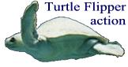
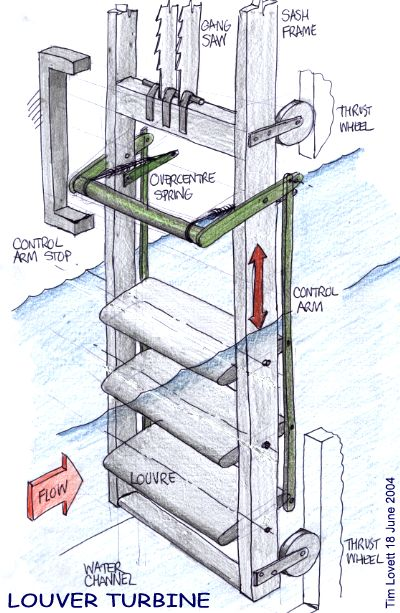
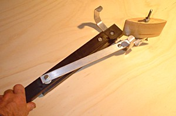
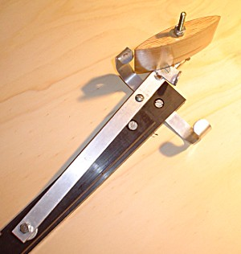
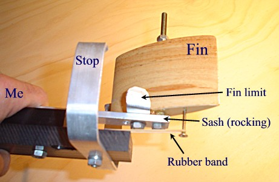
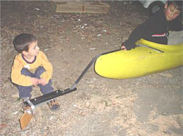
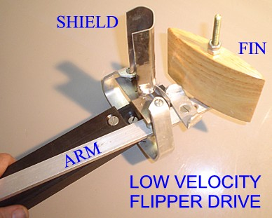

COPYRIGHT Tim Lovett © 18 June 2004
.

A suggested drive for Noah's up/down water powered saw. (Ref 3)

Up/Down Gang Saw driven by Flippers
The water is diverted into a channel which runs under the saw house. There is no need to control the channel flow to stop the pump, this can be done by leveling the louvers instead. The height of the sash frame is virtually unrestricted, (provided the mass doesn't get excessive), making it very easy to lay out the building.
The channel would logically be connected from a weir with a gate control at the top for maintenance and to save water when idle.
The torque applied to the louvers should be minimal if the axis is central and the louvers well spaced to avoid flow interference. The same principle is used in a butterfly valve.
But will it work?
MIT is looking at paddles as an improved ship propulsion method (Ref 2). A very similar principle has been proposed for a tidal generator.
Image and concept Tim Lovett 18 June 2004
What I like about it. + Not a familiar waterwheel so it doesn't look 1800's... "Hey, there's an early American waterwheel, what's that doing there?" + Not so obvious as a waterwheel (which should have appeared in Mesopotamia - a visible spinning thing people would remember) + More closely modeled after the action of a turtle flipper (in reverse), rather than the style of rotationally obsessed industrial revolution inventors. (wheels and propellers) + Hidden under the saw-house so it doesn't distract the viewer too much + Kills the circular saw idea well and truly (tee hee) + Make a nice 3D animation Mechanical niceties. + Direct drive for an up/down saw + No tricky parts to make (Not even a major axle. Could be almost entirely made in wood with only minor and small metal components - something I prefer where possible) + Excellent control (can stop instantly without water inertia concerns)+ Can't get jammed. (Can reverse the blade at any time. Now, I wonder what they did with those old waterwheel driven things? Divert the water, backup the wheel, release the blade and start again? Yucko) + Adjustable stroke (Bet you can't do that with anything else, not that it's all that necessary...) + Not very sensitive to manufacturing precision (Geometric or fit tolerances can be wide, which suits low tech manufacture.) Issues.> The simplicity is suspicious. Someone would surely have tried this before, which makes me think there must be something I'm not aware of. We will need a test model to find out. > Flowrate and power. We probably have a license to have copious flow in a pre-flood river. Actually this turbine should suit either a high flow/low head site, or could conceivably use a smaller high speed channel. Be funny if it works eh? See Ref 1,2 Checking the Idea To see if this really works, a simple model was built looking very similar to a rudder. In fact it really is a rudder. It was simpler to make the 'sash' pivot rather than slide since there is no saw attached. The pivot is inferior to a linear motion because a greater tilt of the fin is needed to complete a stroke turn, by the additional angle of the sash (arm). The unit is designed to allow quick fin changes as well as adjustments of fin angle and sash stroke. Since running water is such a rare event in Australia lately, I'm thinking of testing it in a canoe.  Flipper hits right stop  About to hit left stop Seems to work OK as a motor (in the bathtub), I can definitely feel the thrust when the arm is rocked. (Which begs the question as to why it wasn't used in the steam days.) It works with a very weak rubber band so I might shorten the lever arm at the fin. According to the unofficial bathtub trial the flow velocity will need to be fairly high, the tub is too short to get it to cycle. I'm yet to play with fin geometry - esp depth/width ratios and whether a very wide fin is more difficult to turn at the end of stroke. If this is the case then a multi-louver design with narrow fins might be the best way (like the original sketch).This method might work best horizontally in a flowing stream which maintains a constant depth (A bit like paddling a canoe upstream at an angle in order to cross a fast flowing river). Might power a crosscut saw this way, or the same gang saw via cables. Now, if we use cables, we might as well have a floating fin (boat) held in the stream by 2 cables that control its angle. This requires very little modification to a flowing river. Pretty sure this thing will need a high flow rate, similar perhaps to the undershoot paddle wheel. First turbine test shows the fin overpowered the mass of the sash (arm), there was insufficient momentum to swing the fin completely to the end of the stroke. As soon as the fin hit the stop it simply aligned itself to the flow because the low mass sash (arm) could easily halt.It works nicely under a tap (waterfall) where the turning occurs outside the flow. This would suggest a high fin/mass ratio could work if the limits of the stroke were shielded from the flow and the turning done amongst pre existing eddies and still water. Of course, this is an unlikely requirement because the real sash will have plenty of inertia, probably too much so a The spring can probably be removed if the fin is slightly forward of center, but this is introducing a tweak (well, chopping away some fin at the back). This also means you can't drive it manually like a power steering operation. The 'power steering' effect where the saw follows the movement at the control arm might be an effective way to do some other tricks like a forging hammer, or the driving of furnace bellows. In fact anywhere you want to servo assist a human movement. I am fairly certain this unit could work as a power assisted saw, the sawyer lightly steering the arm and driving the gang saw. Such a system would look less 'mechanized' but would obviously make the job a lot easier. The unit mounted on the back of a canoe. The front is a better option because the flow is undisturbed, but the mounting can be reversed pretty easily if desired. So, the bets are on...will it work, or won't it?... Have to wait till morning when we'll sneak out (the boys and I) in the early morning and find out. It's all part of home schooling you know. Didn't work. MORE IDEASA mass added to the control arm to cause it to flip over when the sash decelerates. Horizontally mounted point mass on a spring arm flexibly connected to the control arm. or... The sash end of the over-center spring is held on a vertically spring mounted mass. This looks like it might want to resonate depending on nat freq. Pretty easy to tweak this by playing with mass/spring ratio. Then again, we could always bring in some friction too. NO interference with foil rotation inertia. Leading edge control surface on front of fin to ensure complete turn over. This does not require over-center spring and it does work. Problem is it's looking a bit high tech. LOW SPEED FLIPPERTo operate at a lower flow velocity the fin could be presented perpendicular to the flow. At it zero vertical thrust position (90o) it is unstable unlike the previous parallel design. This is preferred because the fin will not find it's own equilibrium position.As a quick test the flipper was set at 90 and a shield placed in front of the fin to partially block the flow mid-stroke. This one works in the bath - three cycles in less then 1 meter.The disadvantage is the loss of power due to the shield, especially mid-stroke where you want it most. The next logical step is to set an arm extending from the back of the fin which triggers the fin change against the two stops - the exact equivalent to the previous control arm. After this, check the best angles for maximum thrust. Unlike hydrofoils, drag is irrelevant here, so we are only watching out for the loss of thrust due to stall conditions. REFERENCES AND LINKS 1. A tidal current (well any current) generator http://www.engb.com/Downloads/wren.pdf Obviously designed for low flow velocities (like a tidal current, only a few m/s)2. Oscillating foils considered as alternative to normal propeller. Ongoing work at MIT. http://web.mit.edu/newsoffice/www/pengphotos.html . What a surprise, engineers copying God again. This propulsion unit is almost the same idea as my louver saw but used as a motor rather than a turbine. It is rather more complex because they want to steer the thing and balance reaction forces - hence the computer control. But the numbers show that there is serious power available, probably way ahead of paddlewheels.3. My youngest daughter woke up at 4am so I was up for good. Anyway she likes watching Dad color in - its very unusual. Good creative time of day... I called it a Louver Turbine - I can't find a better name on the net. Hydroplanes, foils?...nah. But maybe just a 'Flipper Saw', which would make the 'Stop' a 'Flipper Tripper'. Then again, being the mechanical equivalent of a Flip Flop circuit, maybe 'Flip Flop Saw'.
What I like about it.
+ Not a familiar waterwheel so it doesn't look 1800's... "Hey, there's an early American waterwheel, what's that doing there?"
+ Not so obvious as a waterwheel (which should have appeared in Mesopotamia - a visible spinning thing people would remember)
+ More closely modeled after the action of a turtle flipper (in reverse), rather than the style of rotationally obsessed industrial revolution inventors. (wheels and propellers)
+ Hidden under the saw-house so it doesn't distract the viewer too much
+ Kills the circular saw idea well and truly (tee hee)
+ Make a nice 3D animation
Mechanical niceties.
+ Direct drive for an up/down saw
+ No tricky parts to make (Not even a major axle. Could be almost entirely made in wood with only minor and small metal components - something I prefer where possible)
+ Excellent control (can stop instantly without water inertia concerns)
+ Can't get jammed. (Can reverse the blade at any time. Now, I wonder what they did with those old waterwheel driven things? Divert the water, backup the wheel, release the blade and start again? Yucko)
+ Adjustable stroke (Bet you can't do that with anything else, not that it's all that necessary...)
+ Not very sensitive to manufacturing precision (Geometric or fit tolerances can be wide, which suits low tech manufacture.)
Issues.
> The simplicity is suspicious. Someone would surely have tried this before, which makes me think there must be something I'm not aware of. We will need a test model to find out.
> Flowrate and power. We probably have a license to have copious flow in a pre-flood river. Actually this turbine should suit either a high flow/low head site, or could conceivably use a smaller high speed channel. Be funny if it works eh? See Ref 1,2
Checking the Idea
To see if this really works, a simple model was built looking very similar to a rudder. In fact it really is a rudder. It was simpler to make the 'sash' pivot rather than slide since there is no saw attached. The pivot is inferior to a linear motion because a greater tilt of the fin is needed to complete a stroke turn, by the additional angle of the sash (arm). The unit is designed to allow quick fin changes as well as adjustments of fin angle and sash stroke. Since running water is such a rare event in Australia lately, I'm thinking of testing it in a canoe.

Flipper hits right stop

About to hit left stop

Seems to work OK as a motor (in the bathtub), I can definitely feel the thrust when the arm is rocked. (Which begs the question as to why it wasn't used in the steam days.) It works with a very weak rubber band so I might shorten the lever arm at the fin. According to the unofficial bathtub trial the flow velocity will need to be fairly high, the tub is too short to get it to cycle. I'm yet to play with fin geometry - esp depth/width ratios and whether a very wide fin is more difficult to turn at the end of stroke. If this is the case then a multi-louver design with narrow fins might be the best way (like the original sketch).
This method might work best horizontally in a flowing stream which maintains a constant depth (A bit like paddling a canoe upstream at an angle in order to cross a fast flowing river). Might power a crosscut saw this way, or the same gang saw via cables. Now, if we use cables, we might as well have a floating fin (boat) held in the stream by 2 cables that control its angle. This requires very little modification to a flowing river.
Pretty sure this thing will need a high flow rate, similar perhaps to the undershoot paddle wheel.
First turbine test shows the fin overpowered the mass of the sash (arm), there was insufficient momentum to swing the fin completely to the end of the stroke. As soon as the fin hit the stop it simply aligned itself to the flow because the low mass sash (arm) could easily halt.
It works nicely under a tap (waterfall) where the turning occurs outside the flow. This would suggest a high fin/mass ratio could work if the limits of the stroke were shielded from the flow and the turning done amongst pre existing eddies and still water. Of course, this is an unlikely requirement because the real sash will have plenty of inertia, probably too much so a
The spring can probably be removed if the fin is slightly forward of center, but this is introducing a tweak (well, chopping away some fin at the back). This also means you can't drive it manually like a power steering operation. The 'power steering' effect where the saw follows the movement at the control arm might be an effective way to do some other tricks like a forging hammer, or the driving of furnace bellows. In fact anywhere you want to servo assist a human movement. I am fairly certain this unit could work as a power assisted saw, the sawyer lightly steering the arm and driving the gang saw. Such a system would look less 'mechanized' but would obviously make the job a lot easier.

The unit mounted on the back of a canoe. The front is a better option because the flow is undisturbed, but the mounting can be reversed pretty easily if desired. So, the bets are on...will it work, or won't it?... Have to wait till morning when we'll sneak out (the boys and I) in the early morning and find out. It's all part of home schooling you know. Didn't work.
MORE IDEAS
A mass added to the control arm to cause it to flip over when the sash decelerates. Horizontally mounted point mass on a spring arm flexibly connected to the control arm.
or... The sash end of the over-center spring is held on a vertically spring mounted mass. This looks like it might want to resonate depending on nat freq. Pretty easy to tweak this by playing with mass/spring ratio. Then again, we could always bring in some friction too. NO interference with foil rotation inertia.
Leading edge control surface on front of fin to ensure complete turn over. This does not require over-center spring and it does work. Problem is it's looking a bit high tech.
LOW SPEED FLIPPER
To operate at a lower flow velocity the fin could be presented perpendicular to the flow. At it zero vertical thrust position (90o) it is unstable unlike the previous parallel design. This is preferred because the fin will not find it's own equilibrium position.
As a quick test the flipper was set at 90 and a shield placed in front of the fin to partially block the flow mid-stroke. This one works in the bath - three cycles in less then 1 meter.

The disadvantage is the loss of power due to the shield, especially mid-stroke where you want it most.
The next logical step is to set an arm extending from the back of the fin which triggers the fin change against the two stops - the exact equivalent to the previous control arm.
After this, check the best angles for maximum thrust. Unlike hydrofoils, drag is irrelevant here, so we are only watching out for the loss of thrust due to stall conditions.
REFERENCES AND LINKS
1. A tidal current (well any current) generator http://www.engb.com/Downloads/wren.pdf Obviously designed for low flow velocities (like a tidal current, only a few m/s)
2. Oscillating foils considered as alternative to normal propeller. Ongoing work at MIT. http://web.mit.edu/newsoffice/www/pengphotos.html . What a surprise, engineers copying God again. This propulsion unit is almost the same idea as my louver saw but used as a motor rather than a turbine. It is rather more complex because they want to steer the thing and balance reaction forces - hence the computer control. But the numbers show that there is serious power available, probably way ahead of paddlewheels.
3. My youngest daughter woke up at 4am so I was up for good. Anyway she likes watching Dad color in - its very unusual. Good creative time of day... I called it a Louver Turbine - I can't find a better name on the net. Hydroplanes, foils?...nah. But maybe just a 'Flipper Saw', which would make the 'Stop' a 'Flipper Tripper'. Then again, being the mechanical equivalent of a Flip Flop circuit, maybe 'Flip Flop Saw'.